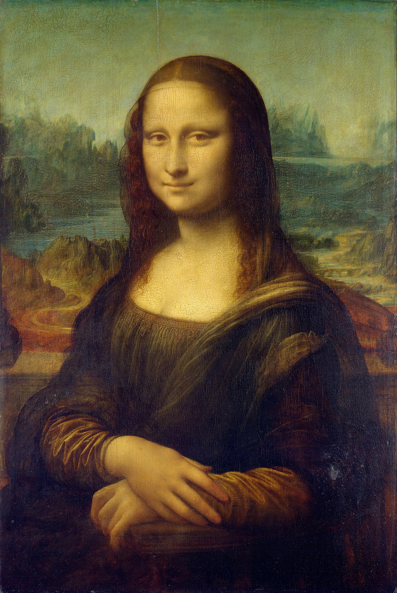

Leonardo da Vinci
Italian polymath of the High Renaissance
Time line of Leonardo da Vinci's Life
- 1452 - born in, or close to, the Tuscan hill town of Vinci.
- mid-1460s - Leonardo's family moved to Florence.
- 1466 - Leonardo became a garzone (studio boy) in the workshop of Andrea del Verrocchio.
- 1469 - Became an apprentice by the age of 17 and remained in training for seven years.
- 1472 - At the age of 20, Leonardo qualified as a master in the Guild of Saint Luke
- 1478 - Leonardo received an independent commission to paint an altarpiece for the Chapel of St. Bernard in the Palazzo Vecchio.
- 1481 - received a commission from the monks of San Donato in Scopeto for The Adoration of the Magi.
- 1482 - Leonardo was sent as an ambassador by Lorenzo de' Medici to Ludovico il Moro.
- 1482 - Worked in Milan until 1499
- 1500 - Leonardo fled Milan for Venice, accompanied by his assistant Salaì and friend, the mathematician Luca Pacioli.
- 1500 - On his return to Florence, he and his household were guests of the Servite monks at the monastery of Santissima Annunziata and were provided with a workshop where, according to Vasari, Leonardo created the cartoon of The Virgin and Child with St Anne and St John the Baptist
- 1502 - Entered the service of Cesare Borgia, the son of Pope Alexander VI, acting as a military architect and engineer and travelling throughout Italy with his patron.
- 1503 - Leonardo began working on a portrait of Lisa del Giocondo, the model for the Mona Lisa, which he would continue working on until his twilight years.
- 1513 - Leonardo spent much of his time living in the Belvedere Courtyard in the Apostolic Palace, where Michelangelo and Raphael were both active.
- 1516 - Leonardo entered Francis' service, being given the use of the manor house Clos Lucé, near the king's residence at the royal Château d'Amboise.
- 1519 - Leonardo died at Clos Lucé at the age of 67, possibly of a stroke.
Read more about Leonardo da Vinci on Wikipedia